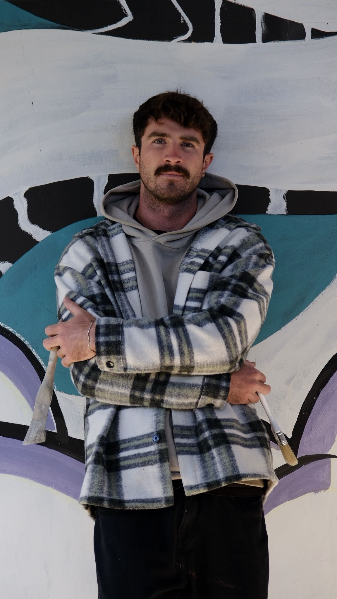

Art has always been a big part of my life. What began as a hobby and a deep admiration for murals, graffiti, and street art eventually grew into something much bigger.
My first steps into street art happened spontaneously, in a small abandoned building in Croatia, where I was living and working as an international travel guide. With no plan other than the urge to create, I painted on those forgotten walls - and immediately fell in love with the process. That moment made me realize the profound impact murals can have: transforming spaces, sparking emotion, and leaving behind a story for others to experience.
Not long after, I was invited by the town I lived in to complete my first official project-a large-scale mural at the local playground. The response from the community was incredible, and it solidified my desire to pursue mural art professionally.
Since then, I have gone on to paint vibrant, large-scale works for Airbnb properties and private clients. Each project gives me the opportunity to transform a space into something memorable, while continuing my journey of seeking out new and unique place to share art around the world.